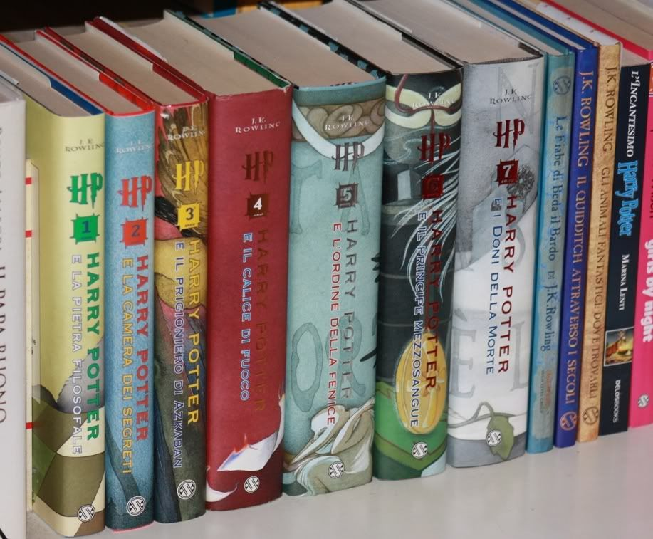
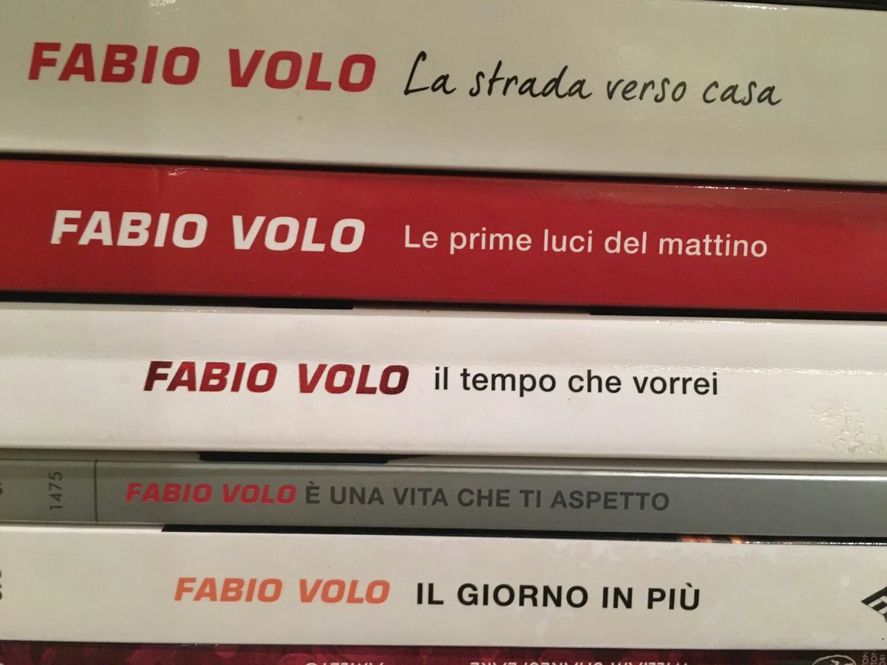
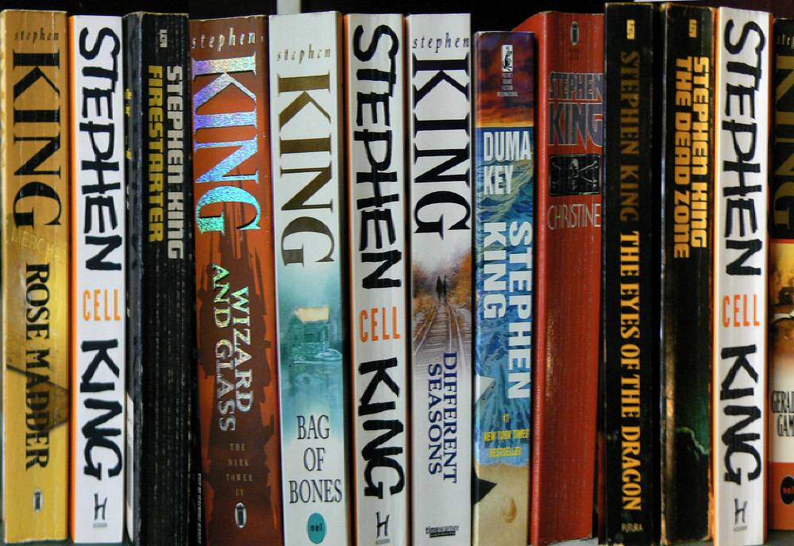
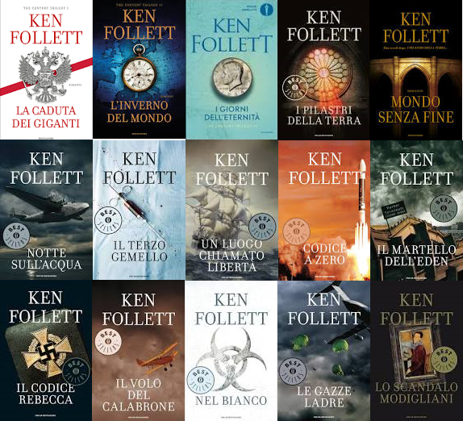

Harry Potter è una serie di romanzi fantasy scritta da J. K. Rowling. La saga è incentrata sulle avventure del giovane mago Harry Potter e dei suoi migliori amici Ron Weasley e Hermione Granger, studenti della Scuola di Magia e Stregoneria di Hogwarts, ed è ambientata principalmente nell'immaginario mondo magico. L'arco narrativo segue principalente lo scontro tra il giovane protagonista ed il mago oscuro Lord Voldemort, desideroso di conquistare il mondo magico e di raggiungere l'immortalità...continua a leggere
 Pubblicato il 27/03/2021 da Giulia LeggotuttoFabio Volo, pseudonimo di Fabio Luigi Bonetti, è un attore, scrittore, conduttore radiofonico, conduttore televisivo, sceneggiatore e doppiatore italiano. Presente nei vari campi dei media italiani, ha raggiunto la notorietà in radio e in televisione, per poi diventare conosciuto anche nel mondo del cinema e dell'editoria: nel 2011 i suoi romanzi sono arrivati a vendere oltre 5 milioni di copie nella sola Italia e sono stati tradotti anche in altre lingue...continua a leggere
 Pubblicato il 15/03/2021 da Simone PolemicoLa Comedìa, o Commedia, conosciuta soprattutto come Divina Commedia, è un poema allegorico-didascalico di Dante Alighieri, scritto in terzine incatenate di endecasillabi (poi chiamate per antonomasia terzine dantesche) in lingua volgare fiorentina. L'opera non esiste nella sua forma originale: essendo stata prodotta prima della diffusione della stampa in Europa, veniva scritta e ricopiata a mano; tra tutti i manoscritti giunti a noi oggigiorno non esistono due versioni uguali, come per tutti i testi antichi, i casi di diversificazione sono tantissimi...continua a leggere
Pubblicato il 01/03/2021 da Simona FiorentinaStephen Edwin King (Portland, 21 settembre 1947) è uno scrittore e sceneggiatore statunitense, uno dei più celebri autori di letteratura fantastica, in particolare horror. Scrittore molto prolifico, nel corso della sua carriera iniziata nel 1974 con Carrie, ha pubblicato oltre ottanta opere, anche con lo pseudonimo di Richard Bachman, fra romanzi e antologie di racconti, entrate spesso nella classifica dei best seller e vendendo oltre 500 milioni di copie...continua a leggere
 Pubblicato il 26/02/2021 da Marco PanicoKen Follett, pseudonimo di Kenneth Martin Follett (Cardiff, 5 giugno 1949), è uno scrittore britannico. Considerato uno dei più grandi narratori al mondo, ha raggiunto la prima posizione del New York Times best-seller list con molti dei suoi romanzi, tra cui Il codice Rebecca, Un letto di leoni, Mondo senza fine, La caduta dei giganti, L'inverno del mondo, I giorni dell'eternità, La colonna di fuoco e Fu sera e fu mattina. Due dei suoi libri, I pilastri della Terra e La cruna dell'ago, sono stati inseriti nella lista dei 101 best seller più venduti di tutti i tempi, rispettivamente al 68º e al 92º posto...continua a leggere
 Pubblicato il 18/02/2021 da Francesco Folletto